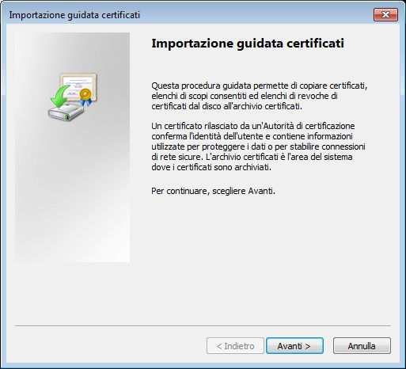

Ogni sistema operativo ha una lista dei certificati installati; tutti i browsers usano quella, tranne FireFox che ne usa una personale.
Per come installare il certificato su Firefox: [Firefox Tutorial]
Eseguire il download del certificato sul PC cliccando sull'icona della homepage.
Fare doppio click sul file scaricato, e apparirà la seguente schermata:
Premere su Installa Certificato
Premere avanti
Selezionare “Colloca tutti i certificati nel seguente archivio”, premere Sfoglia e selezionare “Autorità di certificazione radice attendibili”, come seguente screenshot.
Dopo aver dato conferma a questa schermata premere Avanti, e successivamente Fine.
Il certificato è ora installato.